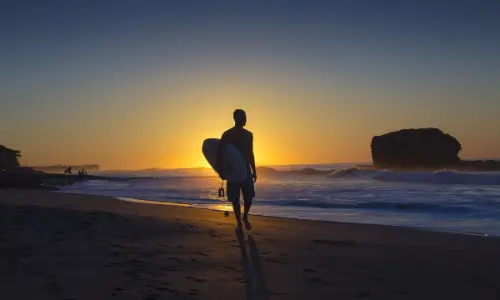

EL SALVADOR
AWAITS YOU
🏞️ Top Places to Visit in El Salvador
Despite its small size, El Salvador is packed with natural beauty, historical sites, and vibrant culture. From lush volcanoes and colonial towns to stunning beaches and archaeological treasures, there’s something for every traveler. Here are some of the best places to visit in El Salvador:
🌋 Nature & Adventure

🏖️ Beaches & Surfing
🏙️ Cities & Culture